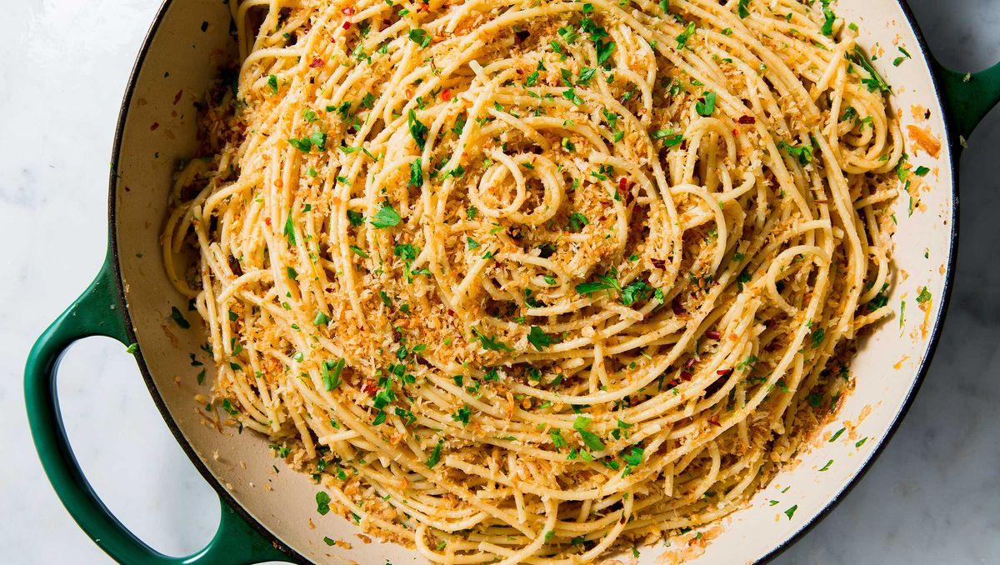

Garlicky Spaghetti

What is Garlicky Spaghetti?
It pretty much explains it in the title, it's spaghetti with garlic and some greens.
If you are a garlic lover you will love this recepie
What you will need
- Kosher salt
- 4 tbsp. - extra-virgin olive oil, divided
- 6 - cloves garlic, 3 minced and 3 sliced, divided
- 1/2 c. - panko bread crumbs
- 1/4 tsp. - crushed red pepper flakes
- 1 tbsp. - butter
- 3 - oil-packed anchovies, minced (optional)
- Zest and juice of 1/2 lemon
- 1/3 c. - freshly chopped parsley
How to make
- In a large pot of boiling salted water, cook pasta until al dente according to package directions. Reserve 1 cup pasta water before draining.
- Meanwhile, in a large skillet over medium-high heat, heat 3 tablespoons oil. Add minced garlic and bread crumbs and season with red pepper flakes and salt. Cook until bread crumbs are golden and garlic is fragrant, about 3 minutes. Transfer bread crumbs to a paper towel–lined plate and wipe out skillet.
- Return skillet to medium heat and add remaining 1 tablespoon oil and butter. When butter is melted, add sliced garlic and anchovies, if using. Cook until garlic is fragrant and anchovies are dissolved, about 2 minutes.
- Add pasta to skillet and toss to combine. Stir in lemon zest and juice. And 1/2 cup pasta water and toss, adding more as needed to thicken sauce. Stir in parsley and three-quarters of the bread crumbs and toss to combine.
- Top with remaining bread crumbs before serving.
Congratulations you`ve made an amazing and garlicky dish
Back to recepies page